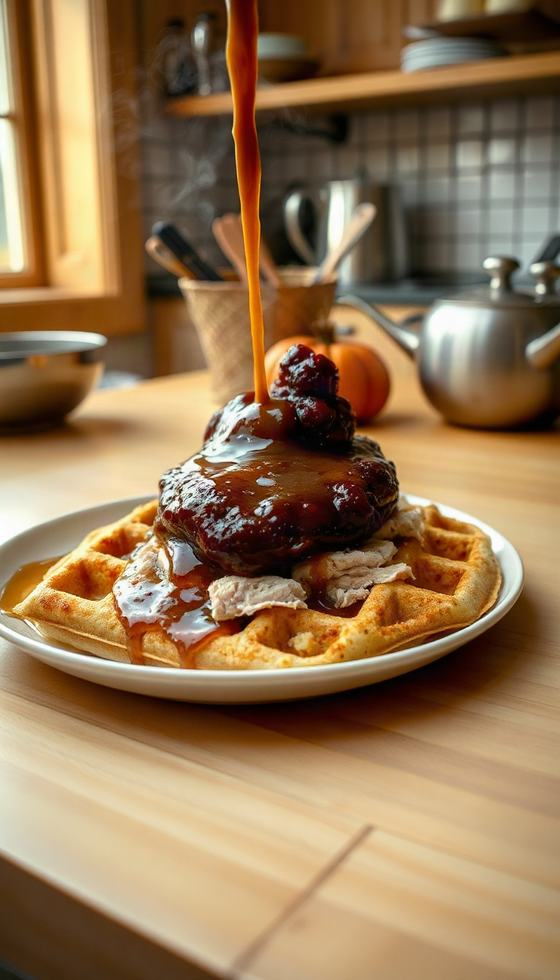
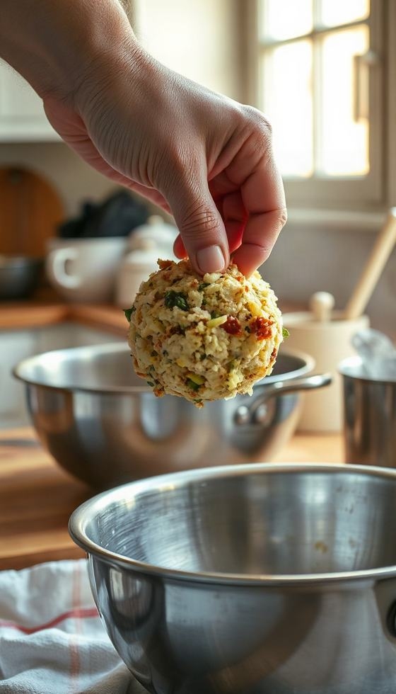
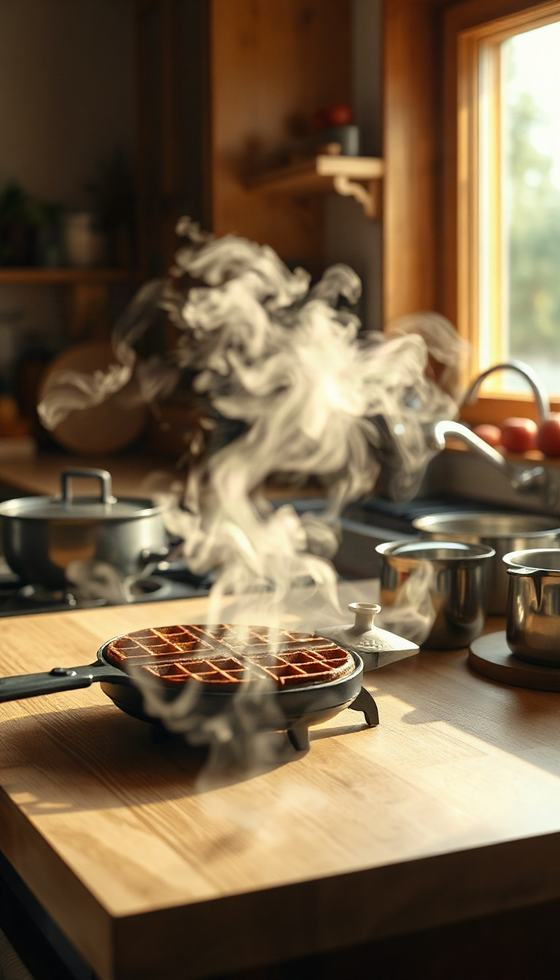
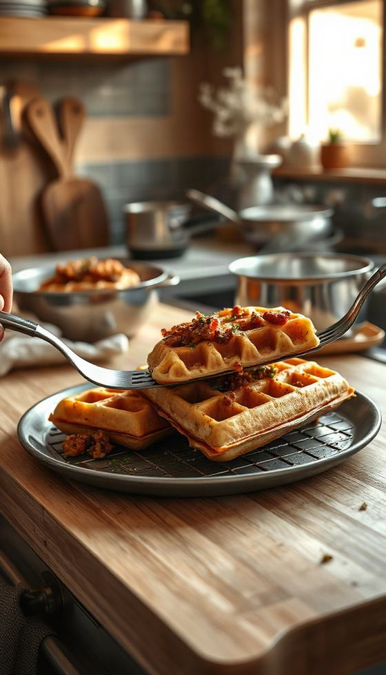

Budget Bite Club
Budget Bite ClubCrispy Leftover Stuffing Waffles with Turkey, Gravy and Cranberry
About $4.32* · 2 servings · 25 min
*Prices are estimates and may differ from what you pay. How we price recipes
Leftover stuffing became crispy stuffing waffles with turkey, gravy and cranberry, $2.16 a serving.





Ingredients
- 2 cups (about 300 g) Leftover stuffing
- 1 large Egg
- 2 tbsp (30 ml) Milk
- 120 g (about 1 cup) Leftover cooked turkey, sliced or shredded
- 1/2 cup (125 ml) Leftover gravy
- 1/4 cup Cranberry sauce
- 1 tsp Canola oil, for greasing
Steps
- 1. Preheat your waffle iron to medium-high. No waffle iron? Heat a nonstick skillet over medium heat instead.
- 2. Put the stuffing in a mixing bowl and break up any big clumps with a fork.
- 3. In a small bowl, beat the egg with the milk, then stir it into the stuffing until it holds together when squeezed. If it still feels crumbly, add another splash of milk.
- 4. Brush the waffle iron lightly with oil. Pack in half the stuffing mixture and close the lid.
- 5. Cook 6 to 8 minutes without opening early, until deep golden and crisp. The centre should reach 74°C / 165°F on a thermometer, since it contains raw egg and leftovers.
- 6. Lift the waffle out with a spatula and keep it warm on a plate. Repeat with the rest of the mixture. (Skillet method: press the mixture into two 1.5 cm thick patties and cook 4 to 5 minutes per side until crisp and 74°C / 165°F inside.)
- 7. While the waffles cook, put the gravy in a saucepan and bring it to a gentle boil, stirring.
- 8. Add the turkey to the gravy, cover, and heat on low for 3 to 5 minutes until the turkey is steaming hot, 74°C / 165°F.
- 9. Plate each waffle, spoon the turkey and gravy over the top, and finish with a dollop of cranberry sauce.
What you'll need
Gear links go to Amazon (Amazon.ca, or Amazon.com in the US). As an Amazon Associate I earn from qualifying purchases, at no extra cost to you.
Watch the videoMore $5 recipes
About the prices: they're estimates, not quotes. Since Nov 2026 they're based on Statistics Canada's monthly average retail prices where an item is listed (Open Government Licence - Canada), otherwise on typical Canadian grocery prices, and count only the amount of each ingredient used, not whole packages. What you pay will vary by store, location, brand, sales, taxes and date, and any pantry staples you need to buy will add to it. Recipe visuals and narration are AI-generated.